|  |
FILMES EM CARTAZ |
CADASTRO |
LOGIN |
SOBRE |
Cotilplex Cinemas© é uma rede de cinemas afiliada ao Cotil com o intuito de expandir o conhecimento e cultura dos alunos, com a presença de grandes filmes, de heróis até filmes culturais.
Nossos cinemas estão espalhados por Limeira e região, contando com salas exclusivas para apresentações cinematográficas ou teatrais de alunos do Cotil!
Termos de uso
As informações acima são fictícias, projeto feito por:
Luigi Brassali Frigo
Natan Juliano